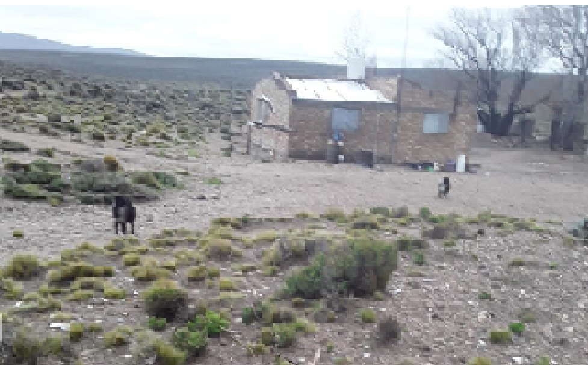
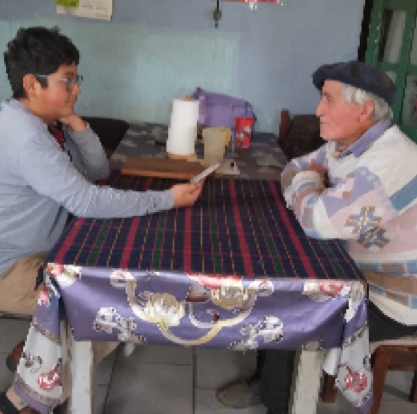

¿Conocías a gente de esta zona? Entérate de cómo sobrevive con sus animales y cómo se prepara antes del invierno.
Aprender de ellos es saber valorar sus trabajos de manera digna y sin rencores.
Visitamos a don Marcial Torres, un gaucho como cualquiera pero no de cualquier lugar. Él está ubicado junto a su familia en la Línea Sur, específicamente en el 25 de Mayo, cerca de Kakel Huincul. Al presentarnos nos cuenta lo que le ha tocado vivir: empezó a trabajar a los 7 años y hoy tiene 77 años de experiencia, y nunca se fue de este paraje llamado Cerro Cura Uf. Ha vivido cosas que hoy ya no son las mismas, por suerte: dificultades climáticas, despoblación de animales, problemas de construcción a causa de los ventarrones.
Prepararse antes del invierno
Hasta el día de hoy lo sigue sobrellevando con estos fríos grandes. Nos cuenta cómo se preparan antes del invierno: traen los recursos necesarios como mercadería (harina, yerba, fideos, arroz), leña, gas y forraje para los animales. Además, sueltan los castrones y carneros en el mes de mayo, refuerzan los corrales y las ramadas para guardar a los caballos, las chivas y las ovejas, y se abastecen de ropa para las bajas temperaturas, iluminación para la casa y linternas para la noche.
La salud de los animales
Como están cerca de la época de parición, le preguntamos por las medidas de seguridad para los animales. Nos dice que solo usan bañaderas y vacunas en caso de garrapatas, boquera y sarna. No suelen aparecer otras enfermedades, así que solo compran esos remedios. Para la boquera usan remedios caseros como aceite comestible; y si les agarra a los corderos machos se les pela la cola, y a las corderas la panza, para que no se siga propagando. Solo si no tienen los remedios que se compran —pietín, pedero o pododermatitis— recurren a ellos.
Los chivos y los yeguarizos
Con los chivos no es común que se enfermen, a menos que les agarre colitis o se pulguen: solo usan agua dulce, porque no se compran remedios para ese tipo de enfermedades. Por eso nos dice que los animales cabríos son más llevaderos. Los yeguarizos solo se desparasitan con vacunas o inyectables, pero no más que eso.
La parición
En el tiempo de parición también se preparan, a fines de septiembre, más que nada con los chivos. Con estas lluvias viven situaciones malas, como que se les muera una cría de frío al no poder encontrar dónde nació. Lo que los ayuda es la ramada hecha con techo de chapas y bien forrada con nailon y maderas, dividida en tres partes: para apartar las chivas recién paridas, las que están por tener cría y las que ya tenían cría. Así se organizan mejor. Al sacarlas por la mañana uno tiene que salir a pastorearlas y traer uno o dos chivitos; si hay más que traer, tienen que salir tres, y así se hace más fácil.

Convivir con los animales salvajes
Queremos saber si se puede sostener el equilibrio con los animales salvajes como zorros, pumas o zorrinos, y nos dice:
«Por suerte no nos ha tocado eso de las plagas, porque este lugar es llano, por eso no paran acá esos animales. También es que se anda mucho en estos lugares, ya que es un cuadro (alambrado) chico y por eso no vienen acá.»
Fuera del diálogo nos cuenta también que usan métodos simples, como andar siempre con perras, y por eso no los atacan de manera fácil. Parece que la sufren mucho en estos casos, pero por eso no piden veterinarios ni cazadores: van acompañados de lo que les dejaron los mayores.
Su mensaje para los que vienen
«Lo único que les voy a decir a los que vienen este año es que aprendan lo que les enseñan y valoren los trabajos que hacemos, pero nunca olviden lo que nos dejaron nuestros ancestros.»
Sosa Torres Marcial · Sede Colán Conhue (Anexo ESRN N.º 36) · Tutor: Maicol Carballo